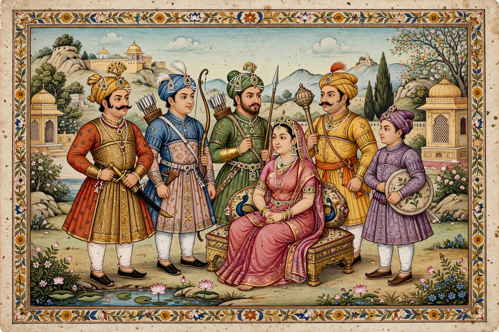

Pandava

The Pandavas are the five legendary brothers who are the central heroes of the Hindu epic Mahabharata: Yudhishthira, Bhima, Arjuna, and the twins Nakula and Sahadeva. Legally the sons of King Pandu of Hastinapura, they were each said to be fathered by a god — Dharma, Vayu, Indra and the Ashvins respectively — because of a curse preventing Pandu from having children. They shared one wife, Draupadi, whose humiliation by their cousins the Kauravas helped ignite the epic's central conflict.
The story
Raised alongside their hundred cousins, the Kauravas, the Pandavas' skill and popularity provoked the jealousy of the eldest Kaurava, Duryodhana. After surviving an attempt to burn them in a house of lac, the brothers won Draupadi's hand and received the kingdom of Indraprastha. Yudhishthira then lost everything — kingdom, brothers, wife and freedom — in a rigged dice game against Shakuni, sending the Pandavas into twelve years of exile and a thirteenth year in hiding.
Kurukshetra War
When Duryodhana refused to return their share of the kingdom, the Pandavas fought the eighteen-day Kurukshetra War, advised by Krishna. On the eve of battle Arjuna's doubts prompted Krishna's discourse, the Bhagavad Gita. The Pandavas won at enormous cost — nearly all the warriors on both sides died — and Yudhishthira was crowned king. In old age the brothers and Draupadi renounced the world and set out for the Himalayas, ascending towards heaven.
Each brother embodies a virtue: Yudhishthira truth and duty, Bhima strength, Arjuna martial excellence, Nakula beauty and horsemanship, Sahadeva wisdom and astrology.
See also: Mahabharata, Kaurava, Arjuna, Draupadi, Kurukshetra War.